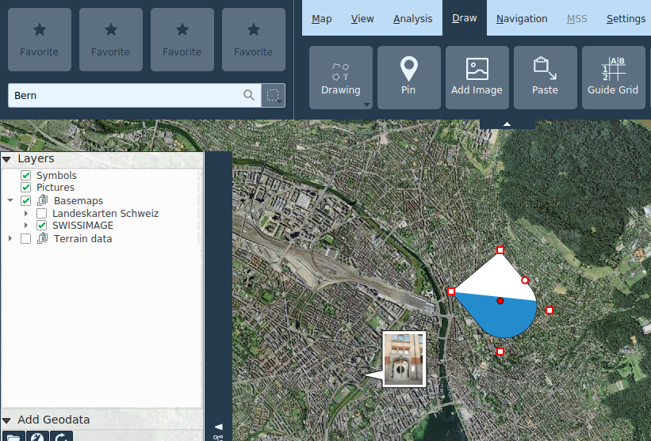

Disegnare
Figure geometriche e testi (Redlining)
Possono essere disegnate geometrie dei seguenti tipi:
- Punti
- Linee
- Poligoni
- Rettangoli
- Cerchi
A seconda del tipo di figura geometrica, è possibile definire colore e stile per bordo e riempimento, nonché la larghezza delle linee e la dimensione dei punti.
Per quanto riguarda i testi, è possibile impostare dimensione e tipo del carattere, nonché il colore di riempimento.
Le figure geometriche e i testi così delineati vengono raggruppati nel layer Redlining nell'elenco delle carte.
Le figure geometriche o i testi già disegnati possono essere modificati selezionandoli sulla mappa. Gli oggetti selezionati possono essere spostati e, a seconda del tipo di figura geometrica, è possibile spostare i singoli punti di controllo, nonché crearne o rimuoverne tramite menu contestuale.
È possibile continuare il disegno di linee e poligoni esistenti dal menu contestuale dei vertici della geometria.

Durante il disegno è possibile annullare o ripristinare cambiamenti effettuati tramite CTRL+Z e CTRL+Y, oppure tramite i pulsanti appositi situati nella parte inferiore della mappa.
Quando si creano o modificano delle figure geometriche, vengono anche visualizzati i relativi valori di misura.
Figure geometriche e testi possono venir copiati, tagliati e incollati tramite gli usuali tasti di scelta rapida CTRL+C, CTRL+X e CTRL+V oppure dal menu contestuale. È possibile selezionare più figure e testi contemporaneamente con il tasto CTRL, e in seguito spostare, copiare, tagliare e incollare l'intero gruppo.
Spilli
Le spilli sono marcatori della posizione georeferenziati che possono essere inoltre dotati di un nome e di altre annotazioni.
Nel tooltip di una puntina collocata sulla mappa è possibile leggere la posizione e l'altezza del punto dove essa è situata. Facendo clic con il pulsante destro sulla spillo, è possibile copiare la sua posizione negli appunti. Facendo doppio clic sulla spillo si apre il dialogo degli attributi. Link interattivi possono essere copiati negli attributi dal browser.
Le spilli possono essere ricercate per nome e per annotazioni nella ricerca globale.
Aggiungi immagine
Immagini raster
Immagini e foto nei comuni formati (JPG, PNG, BMP) possono venir aggiunte alla mappa come annotazioni. Queste vengono visualizzate all'interno di un fumetto. Se l'immagine è georeferenziata (tramite dei tag EXIF), il fumetto viene posizionato nella posizione corrispondente nella mappa e la posizione è bloccata. Il blocco della posizione può essere attivato e disattivato dal menu contestuale. Facendo doppio clic sul fumetto, l'immagine viene aperta con il programma di visualizzazione predefinito del sistema. La dimensione del fumetto può essere aggiustata a piacimento dagli angoli.
Le immagini sono raggruppate nel layer Immagini.
Grafiche vettoriali
Pure con la funzionalità Aggiungi immagine è possibile aggiungere grafiche SVG alla mappa. Queste possono essere scalate rispettivamente ruotate trascinando i rispettivi punti di controllo.
Grafiche vettoriali sono raggruppate nel layer Immagini SVG.

Incolla
La funzione Incolla permette di aggiungere diversi tipi di oggetti alla mappa dagli appunti:
- Geometrie: Vengono inserite come oggetti Redlining
- Simboli MSS: Vengono inseriti nel livello MilX Selezionato
- Grafiche SVG: Vengono inserite nel livello Immagini SVG
Simboli SymTaZ
SymZaZ è un'applicazione esterna con la quale è possibile create symboli, segni tattici e segni convenzionali civili secondo il regolamento 52.002.03 del esercito svizzero. Questi simboli possono essere importati in KADAS, tramite la funzionalità Copia negli appunti di SymTaZ seguito da Incolla in KADAS, oppure salvando il simbolo come SVG da SymTaZ e apprendo questo in KADAS attraverso Aggiungi immagine.
Griglia di guida
La griglia di guida è una griglia in cui le righe e le colonne sono etichettate con numeri o lettere. La griglia di guida è memorizzata in un livello specifico e appare nella legenda della mappa. È possibile personalizzare tutte le proprietà della griglia e la didascalia. Per impostazione predefinita, la griglia viene creata in base all'estensione corrente della mappa. È possibile creare un numero arbitrario di livelli di griglia di guida.
Bullseye
Un Bullseye è disegnato come un numero di cerchi concentrici intorno ad un punto selezionato, con assi corrispondenti, separati ad intervalli regolari. Analogamente alla griglia di guida, è memorizzato nel proprio livello e le varie proprietà possono essere liberamente configurate.
Elimina elementi
I singoli oggetti possono essere cancellati tramite menu contestuale o con il tasto DEL. Lo strumento Cancellazione di oggetti consente di eliminare più oggetti di un estratto selezionato. Questa funzione può essere richiamata anche con CTRL+Rettangolo nella modalità di navigazione.